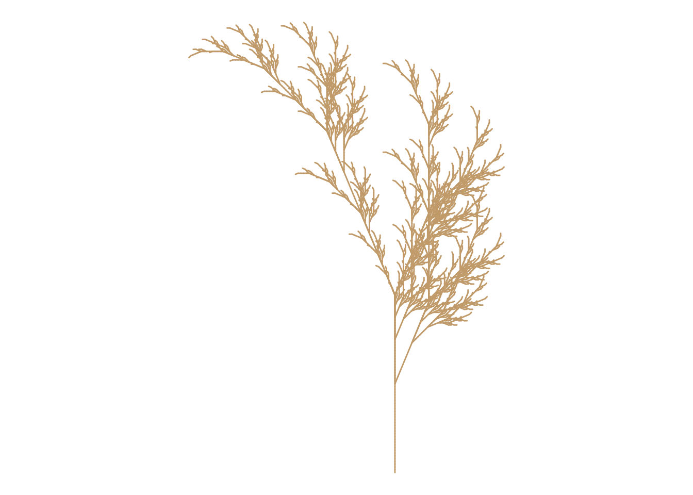

# Title Fall color
# Credit: https://fronkonstin.com
# Install packages
#install.packages("gsubfn")
#install.packages("tidyverse")
library(gsubfn)Loading required package: protoWarning in system2("/usr/bin/otool", c("-L", shQuote(DSO)), stdout = TRUE):
running command ''/usr/bin/otool' -L '/Library/Frameworks/R.framework/Resources/
library/tcltk/libs//tcltk.so'' had status 1library(tidyverse)── Attaching packages
───────────────────────────────────────
tidyverse 1.3.2 ──✔ ggplot2 3.3.6 ✔ purrr 0.3.4
✔ tibble 3.1.7 ✔ dplyr 1.0.9
✔ tidyr 1.2.0 ✔ stringr 1.4.0
✔ readr 2.1.2 ✔ forcats 0.5.2
── Conflicts ────────────────────────────────────────── tidyverse_conflicts() ──
✖ dplyr::filter() masks stats::filter()
✖ dplyr::lag() masks stats::lag()# Define elements in plant art
# Each image corresponds to a different axiom, rules, angle and depth
# Leaf of Fall
axiom="X"
rules=list("X"="F-[[X]+X]+F[+FX]-X", "F"="FF")
angle=22.5
depth=6
for (i in 1:depth) axiom=gsubfn(".", rules, axiom)
actions=str_extract_all(axiom, "\\d*\\+|\\d*\\-|F|L|R|\\[|\\]|\\|") %>% unlist
status=data.frame(x=numeric(0), y=numeric(0), alfa=numeric(0))
points=data.frame(x1 = 0, y1 = 0, x2 = NA, y2 = NA, alfa=90, depth=1)
# Generating data
# Note: may take a minute or two
for (action in actions)
{
if (action=="F")
{
x=points[1, "x1"]+cos(points[1, "alfa"]*(pi/180))
y=points[1, "y1"]+sin(points[1, "alfa"]*(pi/180))
points[1,"x2"]=x
points[1,"y2"]=y
data.frame(x1 = x, y1 = y, x2 = NA, y2 = NA,
alfa=points[1, "alfa"],
depth=points[1,"depth"]) %>% rbind(points)->points
}
if (action %in% c("+", "-")){
alfa=points[1, "alfa"]
points[1, "alfa"]=eval(parse(text=paste0("alfa",action, angle)))
}
if(action=="["){
data.frame(x=points[1, "x1"], y=points[1, "y1"], alfa=points[1, "alfa"]) %>%
rbind(status) -> status
points[1, "depth"]=points[1, "depth"]+1
}
if(action=="]"){
depth=points[1, "depth"]
points[-1,]->points
data.frame(x1=status[1, "x"], y1=status[1, "y"], x2=NA, y2=NA,
alfa=status[1, "alfa"],
depth=depth-1) %>%
rbind(points) -> points
status[-1,]->status
}
}
ggplot() +
geom_segment(aes(x = x1, y = y1, xend = x2, yend = y2),
lineend = "round",
color="burlywood3", # Set your own Fall color?
data=na.omit(points)) +
coord_fixed(ratio = 1) +
theme_void() # No grid nor axes